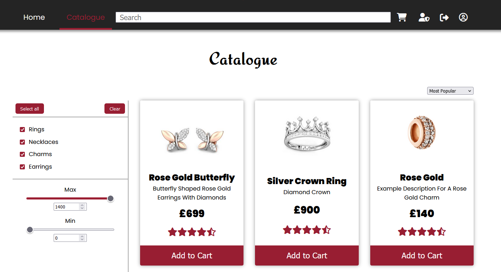
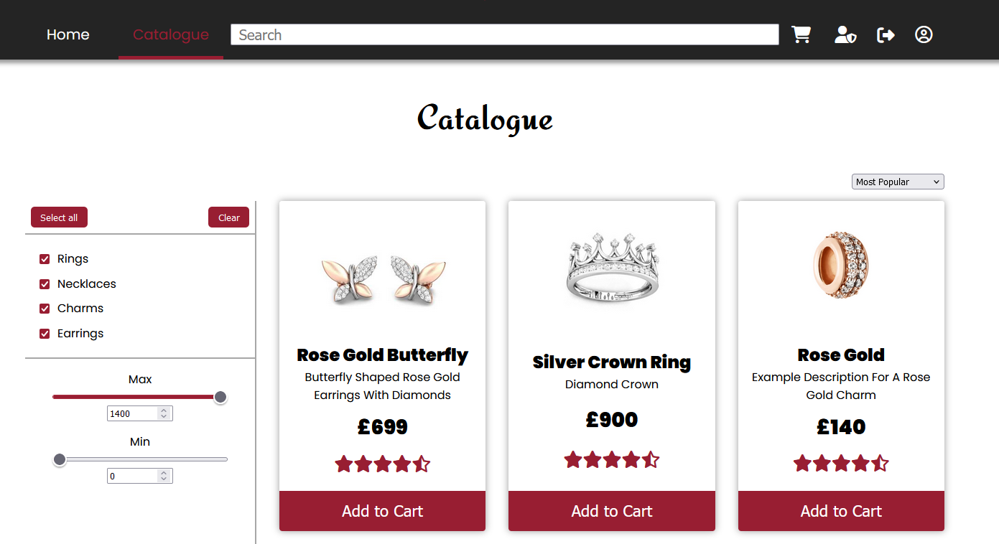
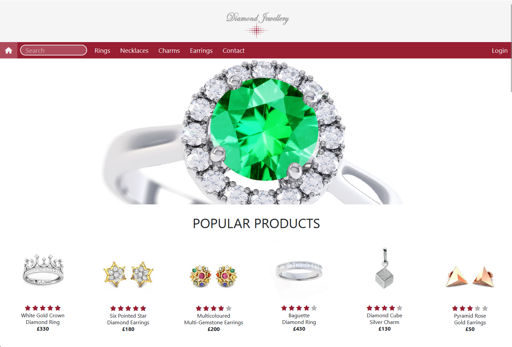

About
For the first iteration of the website, I utilized Bootstrap components and basic JavaScript. Despite the initial design being quite simplistic and relying on what I now view as unattractive Bootstrap elements, my enthusiasm for web development set my project apart. My site ended up looking better than most of my classmates' projects. Although this first iteration was very bare-bones, I felt it was a decent effort for one of my first websites.
Once I had left college I decided I was going to revisit the website and improve upon it in order to make it fully functional with dynamically rendered items from a database and a cart system. To do this I chose to use PHP for server-side scripting and MySQL for database management. However, while using PHP I encountered difficulties in trying to update the shopping cart counter on multiple pages, which led me to temporarily abandon the project for a while.
After some time, I came back to the project and quickly realized I had forgotten how most of the PHP I had written worked. Still stuck with the issue of rendering cart information on multiple pages, I decided it would be better to rewrite the entire website using modern web technologies. I opted for a MySQL - Express - React - NodeJS (MERN) stack, as it seemed the most logical and straightforward approach, using my basic knowledge of JavaScript. Through this process, I gained much more experience in both front-end and back-end development. On the front end, I used React and CSS to create a dynamic and responsive user interface, while on the back end, I built a RESTful API using Express and NodeJS to query my MySQL database and serve it to the front end.
One of the most significant challenges I faced (other than CORS errors) was managing secure user logins and personalized content. Despite initial difficulties in understanding how to implement secure authentication, I eventually decided to use JSON Web Tokens (JWT) instead of session IDs due to their simplicity. However, My implementation does have a vulnerability: the JWTs issued have 1000-day expiration timers and only expire upon user logout. This means that a malicious actor could hijack a token and gain prolonged access to a user's account. This could easily be solved by reducing the token expiration time and implementing token renewal mechanisms to enhance security, I decided it was overkill for the scope of the project.